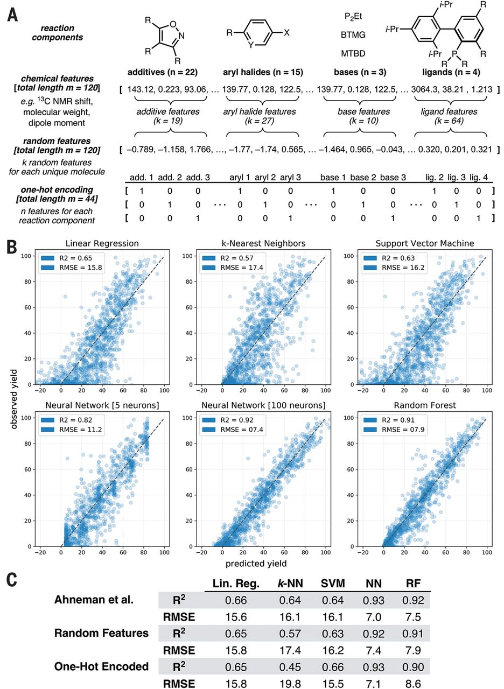
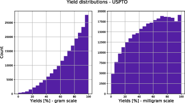
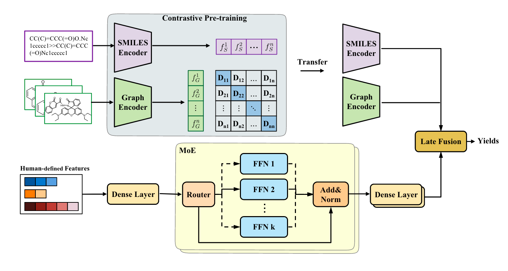

Why discussing this paper?
I chose Chen et al.’s paper (Chen et al. 2024) for our journal club because
- An important and interesting problem in chemistry
- Uses many of the techniques we care about in our group
Context
Predicting the yield of chemical reactions is a crucial task in organic chemistry. It can help to optimize the synthesis of new molecules, reduce the number of experiments needed, and save time and resources. However, predicting the yield of a reaction is challenging due to the complexity of chemical reactions and the large number of factors that can influence the outcome.
Prior work
Ahneman et al. (2018)
Ahneman et al. (Ahneman et al. 2018) reported in Science a random forest model that predicts the yield of chemical reactions in a high-throughput dataset (palladium-catalyzed Buchwald-Hartwig cross-coupling reactions). For this, the authors created a set of features using computational techniques.
A very interesting aspect of this work is the subsequent exchange with Chuang and Keiser (Chuang and Keiser 2018) who point out that the chemical features used in the work by Ahneman et al. perform not distinguishably better than non-meaningful features.

Schwaller et al. (2020, 2021)
Schwaller et al. (Schwaller et al. 2020, 2021) utilized BERT models with a regression head to predict yields based on reaction SMILES.
They observed multiple interesting effects:
- The performance on high-throughput datasets is good, on USPTO datasets the models are not predictive (\(R^2\) on a random split of 0.117 for the gram scale)
- The yield distribution depends on the scale, which might be due to reaction at larger scale being better optimized

Kwon et al. (2022)
Kwon et al. (Kwon et al. 2022), in contrast, used graph neural networks to predict yields. They pass reactants and products through a graph neural network and concatenate the embeddings to predict the yield. They train on a similar loss as the work at hand (but use also use dropout Monte-Carlo (Gal and Ghahramani 2016) to estimate the epistemic uncertainty).
Problem setting
- prior works perform well on high-throughput datasets but not on real-world datasets
- this is partially due to a lot of noise in datasets
- of course, reaction conditions are important, too
Additionally, the authors propose that the previous representations might not be “rich” enough to capture the complexity of chemical reactions.
Approach
The authors propose to fuse multiple features. In addition, they also use a special loss function and a mixture of experts (MoE) model used to transform human-designed features.

Graph encoder and SMILES encoder
The authors pretrain the graph and SMILES encoders using a contrastive loss. The graph encoder is a GNN, the SMILES encoder is a transformer.
Graph convolutional neural network
Their graph encoder is basically a message graph convolutional neural network. The authors use the DGL library to implement this.
The forward pass looks like this:
for _ in range(self.num_step_message_passing):
node_feats = self.activation(self.gnn_layer(g, node_feats, edge_feats)).unsqueeze(0)
node_feats, hidden_feats = self.gru(node_feats, hidden_feats)
node_feats = node_feats.squeeze(0)Where the GNN layer performs a simple operation such as
\[ \mathbf{x}_i^{\prime}=\boldsymbol{\Theta}^{\top} \sum_{j \in \mathcal{N}(i) \cup\{i\}} \frac{e_{j, i}}{\sqrt{\hat{d}_j \hat{d}_i}} \mathbf{x}_j \]
where \(\hat{d}_i\) is the degree of node \(i\) and \(\boldsymbol{\Theta}\) is a learnable weight matrix. \(\mathcal{N}(i)\) is the set of neighbors of node \(i\). \(\mathbf{x}_i\) is the node embedding of node \(i\), \(e_{j, i}\) is the edge feature between node \(i\) and \(j\).
The node embeddings are then aggregated using Set2Set pooling (Vinyals, Bengio, and Kudlur 2016).
SMILES encoder
For encoding SMILES, the use a transformer model. In their code, they seem to pass through only one transformer layer.
The forward pass looks like this:
x = self.token_embedding(text)
x = x + self.positional_embedding
x = x.permute(1, 0, 2) # NLD -> LND
x = self.transformer(x)
x = x.permute(1, 0, 2) # LND -> NLD
x = self.ln_final(x)
x = self.pooler(x[:,0,:])They take the first token of the sequence and pass it through a linear layer to get the final representation.
Contrastive training
The authors use a contrastive loss to train the encoders.
\[ \mathcal{L}_c=-\frac{1}{2} \log \frac{e^{\left\langle f_G^j, f_S^j\right\rangle / \tau}}{\sum_{k=1}^N e^{\left\langle f_G^j, f_S^k\right\rangle / \tau}}-\frac{1}{2} \log \frac{e^{\left\langle f_G^j, f_S^j\right\rangle / \tau}}{\sum_{k=1}^N e^{\left\langle f_G^k, f_S^j\right\rangle / \tau}}, \]
In contrastive training, we try to maximize the similarity between positive pairs and minimize the similarity between negative pairs. In the equation above, \(f_G^j\) and \(f_S^j\) are the representations of the graph and SMILES of the same reaction, respectively. \(\tau\) is a temperature parameter.
Such contrastive training allows to pretrain the encoders on a large dataset without labels.
Contrastive learning is one of the most popular methods in self-supervised learning. A good overview can be found in Lilian Weng’s amazing blog.
Human-features encoder
The authors also encode additional features with feedforward networks in a mixture of experts (MoE) model. The key idea behind MoE is that we replace “conventional layers” with “MoE layers” which are copies of the same layer. A gating network decides, based on the input, which layer to use. This is powerful if we sparsely select the experts-then only a subset of all weights are used in a given forward pass.
\[ \operatorname{MoE}\left(x_H\right)=\sum_{i=1}^t \mathcal{G}\left(x_H\right)_i \cdot E_i\left(x_H\right) \]
This is a mixture of experts model. The authors use a gating network \(\mathcal{G}\) to decide which expert to use. The experts \(E_i\) are simple feedforward networks. The gating network might be a simple softmax layer:
\[ G_\sigma(x)=\operatorname{Softmax}\left(x \cdot W_g\right) \]
in practice, one can improve that by adding sparsity (e.g. selecting top-k).
MoE (Shazeer et al. 2017) has become popular recently as a way to scale LLMs. You might have across model names like Mixtral-8x7B (Jiang et al. 2024), which indicates that the model is a mixture of 8 experts, each of which is a 7B parameter model. The total number of parameters is 47B parameters, but the inference cost is similar to the one of a 14B parameter model. (Note however, that memory consumption is still high as all experts need to be loaded into memory.)
This blog by Cameron Wolfe gives a good overview. You might also find Yannic Kilcher’s video about Mixtral of Experts useful.
Fusion
The fusion of the different features is done by concatenating them
The complete forward pass looks like this:
r_graph_feats = torch.sum(torch.stack([self.clme.mpnn(mol) for mol in rmols]), 0)
p_graph_feats = self.clme.mpnn(pmols)
feats, a_loss = self.mlp(input_feats)
seq_feats = self.clme.transformer(smiles)
concat_feats = torch.cat([r_graph_feats, p_graph_feats, feats, seq_feats], 1)
out = self.predict(concat_feats)where the mpnn method is the graph encoder, the transformer method is the SMILES encoder, and the mlp method is the human-features encoder.
Uncertainty (quantification)
The authors define the prediction as
\[ \hat{y}=\mu(\boldsymbol{x})+\epsilon * \sigma(\boldsymbol{x}) \]
where \(\mu(\boldsymbol{x})\) is the prediction, \(\sigma(\boldsymbol{x})\) is the uncertainty, and \(\epsilon\) is a random variable sampled from a normal distribution.
The model is trained with a loss function that includes the uncertainty:
\[ \mathcal{L}_u=\frac{1}{N} \sum_{i=1}^N\left[\frac{1}{\sigma\left(\boldsymbol{x}_i\right)^2}\left\|y_i-\mu\left(\boldsymbol{x}_i\right)\right\|^2+\log \sigma\left(\boldsymbol{x}_i\right)^2\right] \]
The \(\sigma\) term is capturing observation noise (aleatoric uncertainty).
This loss comes from the idea of variational inference.
\[ \mathcal{L}(\boldsymbol{\lambda})=-\mathbb{E}_{q(\boldsymbol{\theta} ; \boldsymbol{\lambda})}[\log p(\mathbf{y} \mid \mathbf{x}, \boldsymbol{\theta})]+\mathrm{KL}(q(\boldsymbol{\theta} ; \boldsymbol{\lambda}) \| p(\boldsymbol{\theta})) \]
In this equation, the first term is the negative log-likelihood, and the second term is the KL divergence between the approximate posterior \(q(\boldsymbol{\theta} ; \boldsymbol{\lambda})\) and the prior \(p(\boldsymbol{\theta})\). The KL divergence is a measure of how much the approximate posterior diverges from the prior. The idea is to minimize the negative log-likelihood while keeping the approximate posterior close to the prior. This is a way to quantify the uncertainty in the model.
The idea comes from Bayesian inference, where we want to estimate the posterior distribution over the parameters of the model. In practice, this is intractable, so we use variational inference to approximate the posterior with a simpler distribution. The posterior (which quantifies uncertainty) is typically computationally expensive to compute, so we use variational inference to approximate it with a simpler distribution, this is called variational inference. Since during training, we do some sampling, we need to perform a reparametrization trick (Kingma, Salimans, and Welling 2015) to make the gradients flow through the sampling operation.
Results
As in most ML papers, we have tables with bold numbers, e.g. for a dataset with amide coupling reactions:
| Model | MAE \(\downarrow\) | RMSE \(\downarrow\) | \(R^2 \uparrow\) |
|---|---|---|---|
| Mordred | \(15.99 \pm 0.14\) | \(21.08 \pm 0.16\) | \(0.168 \pm 0.010\) |
| YieldBert | \(16.52 \pm 0.20\) | \(21.12 \pm 0.13\) | \(0.172 \pm 0.016\) |
| YieldGNN | \(\underline{15.27 \pm 0.18}\) | \(\underline{19.82} \pm 0.08\) | \(\underline{0.216} \pm 0.013\) |
| MPNN | \(16.31 \pm 0.22\) | \(20.86 \pm 0.27\) | \(0.188 \pm 0.021\) |
| Ours | \(\mathbf{1 4 . 7 6} \pm \mathbf{0 . 1 5}\) | \(\mathbf{1 9 . 3 3} \pm \mathbf{0 . 1 0}\) | \(\mathbf{0 . 2 6 2} \pm \mathbf{0 . 0 0 9}\) |
Here, their model outperforms the baselines. But it is also interesting to see how well the Mordred baseline performs compared to much more complex models.
The pattern of their model being bold in tables is persistent across datasets.
Ablations
The authors perform ablations to understand the importance of the different components of their model. While there are some differences, the differences are not drastic (partially overlapping errorbars).
| Model | MAE \(\downarrow\) | RMSE \(\downarrow\) | \(R^2 \uparrow\) |
|---|---|---|---|
| Ours | \(14.76 \pm 0.15\) | \(19.33 \pm 0.10\) | \(0.262 \pm 0.009\) |
| w/o UQ | \(15.08 \pm 0.13\) | \(19.63 \pm 0.09\) | \(0.249 \pm 0.009\) |
| w/o \(\mathcal{L}_r\) | \(14.80 \pm 0.16\) | \(19.51 \pm 0.10\) | \(0.261 \pm 0.010\) |
| w/o MoE | \(15.12 \pm 0.18\) | \(20.03 \pm 0.13\) | \(0.230 \pm 0.012\) |
| w/o Seq. | \(14.97 \pm 0.16\) | \(19.55 \pm 0.11\) | \(0.261 \pm 0.010\) |
| w/o Graph | \(15.06 \pm 0.15\) | \(19.59 \pm 0.10\) | \(0.260 \pm 0.009\) |
| w/o H. | \(15.83 \pm 0.20\) | \(20.46 \pm 0.18\) | \(0.212 \pm 0.016\) |
Take aways
- A lot of machinery, but not a drastic improvement
- It is the data, stupid! 😉 (It is not really clear how this is even supposed to work with information about the conditions)
- Interestingly, they didn’t test USPTO or other datasets
- Their approach with frozen encoders is interesting, it would have been interesting to see learning curves to better understand the data efficiency of the approach